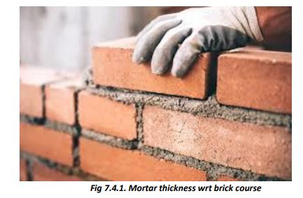
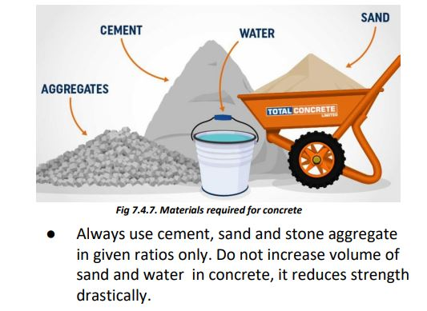
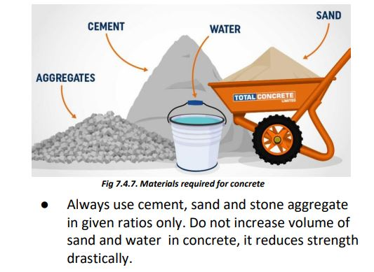

Cement Concrete and Mortar
● Cement mortar is used in the construction of walls to bind the bricks/blocks in position.

● Use Ordinary Portland Cement (OPC) for RCC work, plastering, and other structural applications.
● Use Portland or Portland Pozzolana cement (43 grade) for making mortar for brick/block masonry.
● Use richer mortar, such as 1:5 or 1:4, for making corners and edges during plaster and for repair work.
● Use one part of cement with six parts of clean sand for making mortar for masonry work and plaster.
● Do not mix water into a large volume of mortar at one time. Mortar/concrete must be used within 30 minutes of adding water.

 
